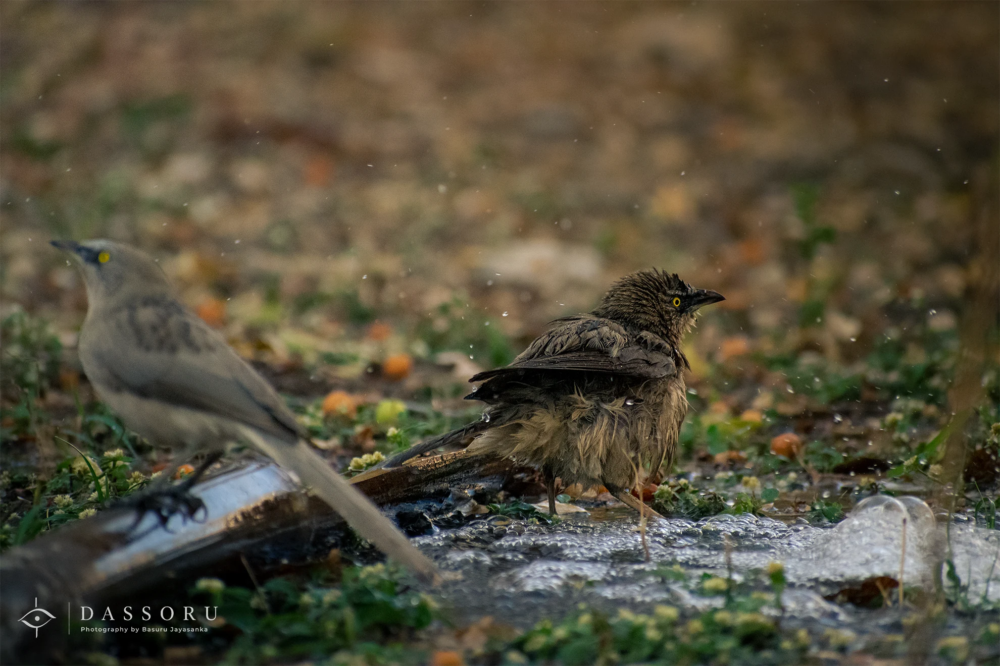

WILDLIFE
The Evening Bath
A little moment of relief.
Jamnagar was hot, dry and unforgiving.
Water was not something to be taken for granted in this landscape, especially as winter was coming to an end.
In the evening, I found this little babbler bathing in a small amount of water before settling down for the night.
Its repeated calls seemed almost perfectly suited to its name.
But what caught my attention was the way it enjoyed the water.
I imagined how exhausting a day in that dry environment might be for such a small creature. Then I watched it bathe, and for a moment, I imagined myself in its place — tired after a long day, finally finding cool water and allowing the tiredness to disappear.
To the bird, it was probably just an evening bath.
For me, it was a small reminder of how precious simple comforts can be.
Sometimes, happiness is not about having more. Sometimes, it is simply about finding what we need.
- Location
- Jamnagar, India
- Date
- February 2023
- Photographer
- Basuru Jayasanka
- Category
- Wildlife
For commercial use, publication, prints or image licensing, please contact Basuru directly via email or WhatsApp.
READER REFLECTIONS
Thoughts & Feelings
behind this photograph.
Did this photograph or story bring back a memory or feeling for you? Leave your reflection below.